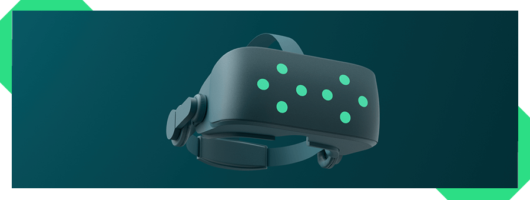

Qt Quick 3D Xr

Introduction
Extended Reality (XR) is a term that includes Virtual Reality (VR), Augmented Reality (AR), and Mixed Reality (MR). These technologies create immersive experiences that can alter a user's perception of the world around them. The Qt Quick 3D Xr module provides APIs for developing XR applications with Qt Quick 3D across a variety of devices and platforms.
Difference between Qt Quick 3D and Qt Quick 3D Xr applications
The entry point
The main difference between a Qt Quick 3D and a Qt Quick 3D Xr application, from a developer's perspective, is the scene's entry point, and being aware of real-world units and tracking data is essential.
In Qt Quick 3D, a minimal application would consist of a camera, light, and a 3D model. The positioning and size of these elements are defined in the scene's coordinate system, which is arbitrary and can be defined by the developer to fit the needs of the application.
View3D { width: 1280 height: 720 PerspectiveCamera { position: Qt.vector3d(0, 200, 300) } DirectionalLight { } Node { id: sceneRoot Model { id: model position: Qt.vector3d(0, -200, 0) source: "#Cylinder" materials: [ PrincipledMaterial { baseColor: "red" }] } } }
In an XR application, consider real-world units and tracking data when defining the scene. The camera's position and orientation are defined by the device's, or in the case of head-mounted displays (HMD), the user's head position and orientation. The scene's units should match the real-world unit. For example, you'd want a door or a desk to be the same size in the real world as in the virtual world.
Note: The entry point in an Qt Quick 3D Xr application is not a View3D but the XrView. In addition, an XrOrigin defines the scene's origin, which tracked items are placed relative to.
XrView { DirectionalLight { } xrOrigin: XrOrigin { XrController { id: rightController controller: XrController.ControllerRight } XrController { id: leftController controller: XrController.ControllerLeft } } Node { id: sceneRoot Model { id: floor source: ":meshes/floor.mesh" materials: [ PrincipledMaterial { baseColor: "green" }] } Model { id: table property real height: 0.7 position: Qt.vector3d(0, height - 2.5, 0) source: ":meshes/table.mesh" materials: PrincipledMaterial { baseColor: "white" } } Model { id: monitor source: ":meshes/monitor.mesh" y: table.height XrItem { id: theScreen y: monitor.yOffset + height x: -width / 2 width: monitor.width height: monitor.height contentItem: ScreenContent {} } } } }
Additional CMake functions
As can be seen in the CmakeLists.txt file for all the Qt Quick 3D Xr Examples, you need to add some functions to your project's top-level CMakeLists file.
To specify a custom AndroidManifest.xml and to make sure it gets used by adding this line to your project's CMakeLists file:
if(ANDROID)
set_property(TARGET xr_simple APPEND PROPERTY QT_ANDROID_PACKAGE_SOURCE_DIR ${CMAKE_CURRENT_SOURCE_DIR}/android)
endif()
For more details about setting up your AndroidManifest.xml, see the relevant section of the Getting Started With Meta Quest 3 page.
CMakeLists.txt changes also apply to visionOS, where we include the MacOSXBundleInfo.plist.in file:
if (APPLE AND CMAKE_SYSTEM_NAME STREQUAL "visionOS")
set_target_properties(xr_simple PROPERTIES
MACOSX_BUNDLE_GUI_IDENTIFIER io.qt.xr_simple
MACOSX_BUNDLE_INFO_PLIST ${CMAKE_CURRENT_SOURCE_DIR}/visionos/MacOSXBundleInfo.plist.in
)
endif()
Where to go from here?
Take a look at Getting Started With Meta Quest 3 or Getting Started With Apple Vision Pro for more information about how to get started with your specific device. See the Supported Platforms page for more information about platforms and devices supported.
If you are looking for a specific Qt Quick 3D Xr API, take a look at the API Reference, or try out one of the Qt Quick 3D Xr Examples, which demonstrate how the Qt Quick 3D Xr APIs can be used.
Quick Links
| Platforms and Toolchains | Getting Started | API Reference |
| Examples | Tools and IDEs
| Developing XR Applications |